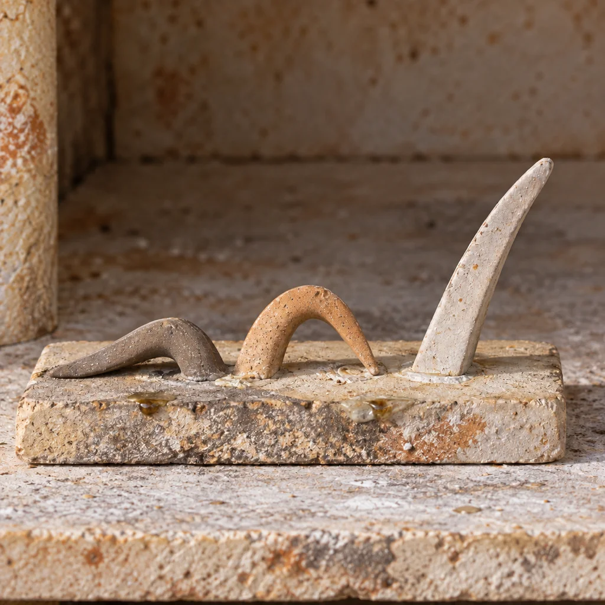
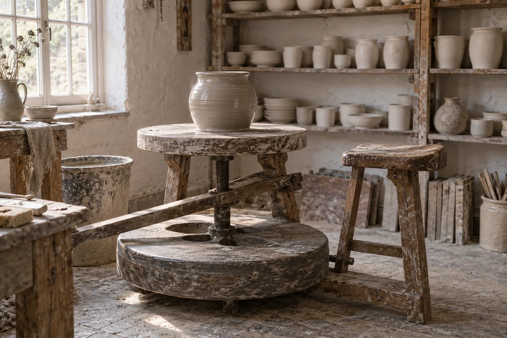

From firing 213
Unloaded on Saturday morning with the kiln at 38 °C. Forty-one pots came out; a shino jar dunted on the bottom shelf and two cups plucked their feet on the kiln wash.
These six are the pick of the top two shelves, signed on the foot and posted from Rye in a week.
The firing log
Firing 214. Hour 9 of 12. 1214 °C and climbing.
Every firing since 2011 is in the kiln book. Today’s curve is read off the thermocouple in the back wall; the cones in the spyhole have the last word.
The last eight firings
| Firing | Date | Kind | Top | Cones down | Pots | Lost | Kiln book |
|---|
The cones

A cone is a slim pyramid of clay and flux that bends only when the pots around it have taken enough heat, so this pack from firing 213 reads like a sentence: cone 8 flat, cone 9 bowed until its tip met the pad, cone 10 just starting to lean, which is stoneware done and nothing overfired.
Classes
Small groups, our clay, our glazes, our kiln. Write to book; we hold a place for a week while you decide.
Visit
Open now, until 17:00.
